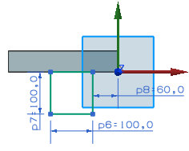
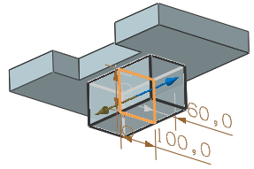
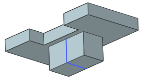

Sketch and extrude the pivot boss
-
Create a sketch on the Y-Z plane of the Datum Coordinate System.
-
Sketch a rectangle with the dimensions shown below.

-
On the Feature toolbar, click Extrude
 .
.
-
Select the rectangular sketch.
-
In the Extrude dialog box, in the Limits group, from the Start list, select Symmetric Value.
-
In the Distance box, type 100 and press Enter.

-
From the Boolean list, make sure Inferred is selected.
-
Click OK.
